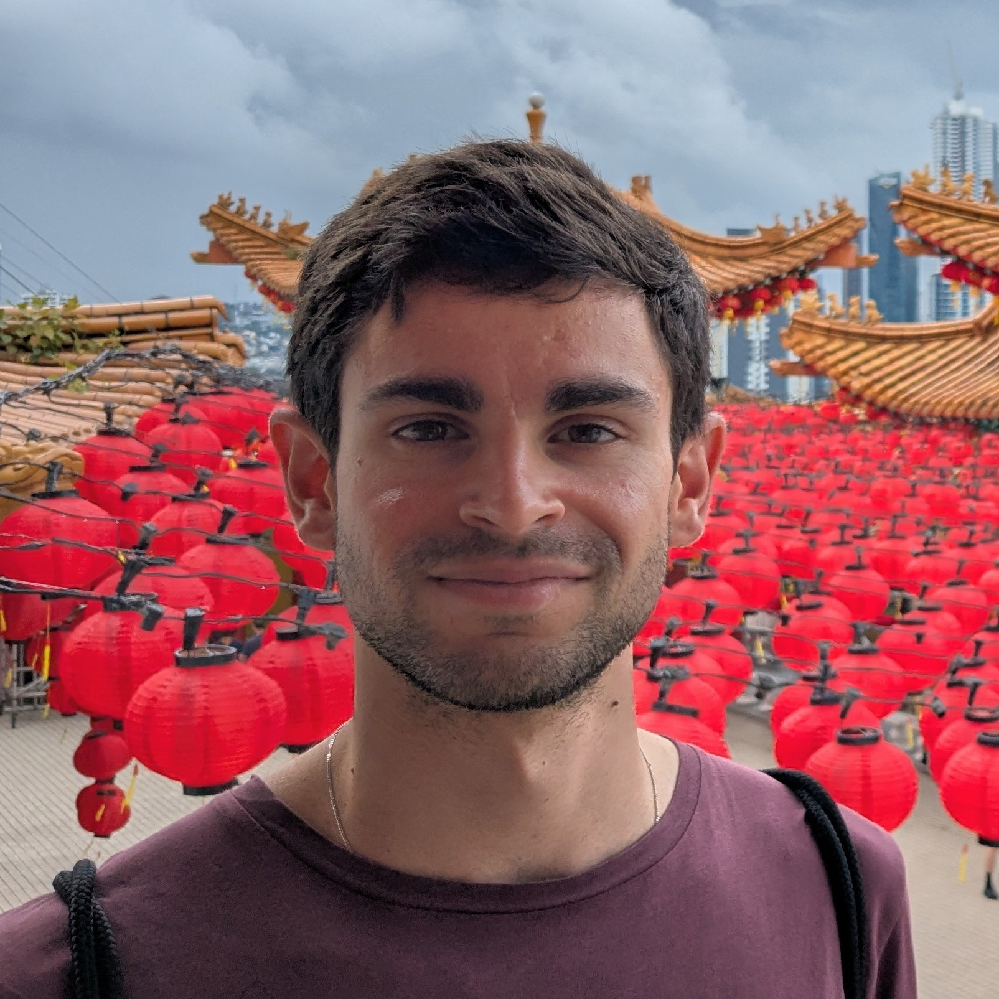
Josué Pérez Sabater
/xoˈswe/ · @josu_ps13
-
 Predoctoral Researcher at UC3M
Predoctoral Researcher at UC3M
About
Hi! I'm Josu.
I'm a biomedical engineer and PhD student, currently working as a researcher. I'm calm, meticulous, hard-working, and a decent programmer. I do my best to live consciously, mindful of others and the environment, and always caring about putting my skills at the service of the community and society. I enjoy reading, traveling, thinking things through, and also organizing stuff — sometimes a bit too much.
Please have a look around. If anything here resonates with you, or you think we could work on something together, feel free to reach out — I'd love to hear from you :).
Academic profile
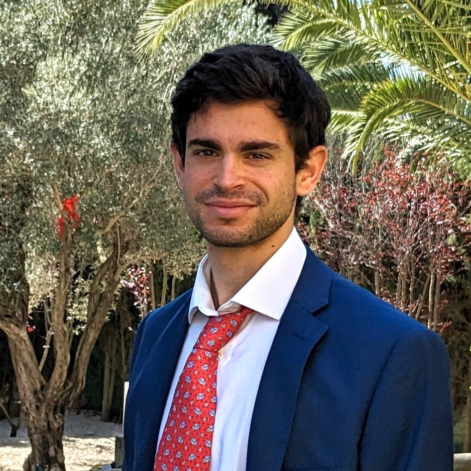
Methodical and hard-working, with strong organizational, problem-solving, and code-design skills. My interests lie in applying AI (machine learning, deep learning) to address challenges in the biomedical and healthcare domains. I have experience across the full data pipeline — preprocessing, analysis, and visualization — as well as in software development and documentation.
My programming experience includes the analysis and modeling of human behavior in the context of suicide prevention, compartmental modeling of intracranial pulsatility, and the simulation of brain structures through spiking neural networks.
Work
Studies
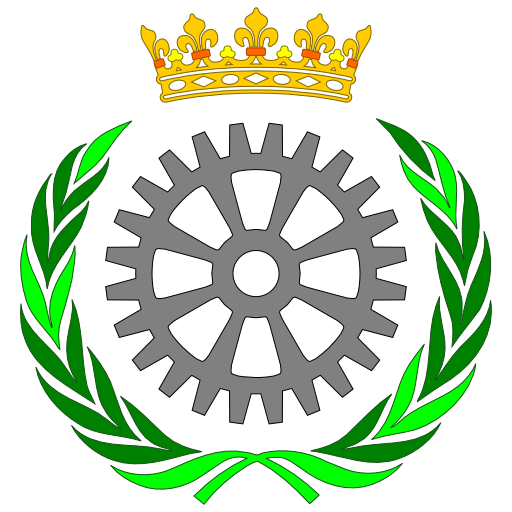
Instituto Juan de la Cierva 2009 – 2016 · Madrid, Spain · web · certificate During 7 years, I had the opportunity to participate in PEAC, a program developed by the Community of Madrid as a voluntary, free, complementary education that enriches the standard curriculum, providing students with an opportunity to experience, research and create. PEAC stimulates creativity and divergent thinking in different learning areas such as the scientific-technologic, artistic, humanistic-literary and social skills.Publications, preprints
- A Vector-Quantized Foundation Model for Patient Behavior Monitoring. Rodrigo Oliver, Josué Pérez-Sabater, Leire Paz-Arbaizar, Diego Herrero-Quevedo, Antonio Artés-Rodríguez, Alejandro Lancho and Pablo M. Olmos. (2025). arXiv. https://arxiv.org/abs/2503.15221
Teaching
Awards
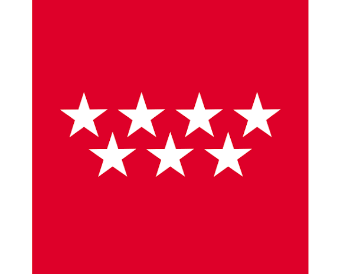
Comunidad de Madrid 1 Apr 2022 · Madrid, Spain · certificate In my third year of university studies, I received the scholarship Beca de Excelencia, provided by Comunidad de Madrid and intended for students with an excellent academic record.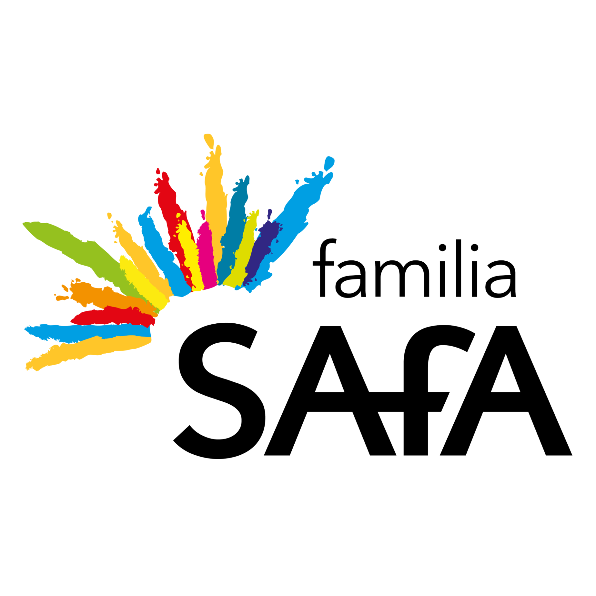
Colegio Sagrada Familia de Madrid 18 May 2018 · Madrid, Spain The distinction Premio Junoy is awarded by Colegio Sagrada Familia to students with the best academic and human trajectory during Spanish ESO and Bachillerato. I was honored to receive the third prize at the end of my studies.Other (certificates, courses…)
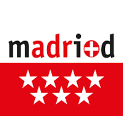
Fundación para el Conocimiento madri+d 25 Sep 2026 · Madrid, Spain · web As part of the efforts in science outreach to the general public, we presented our research work in an accessible and interactive format. We talked about the lab's work in modeling human behavior, showing its applications in monitorization of mental health and oncological patients.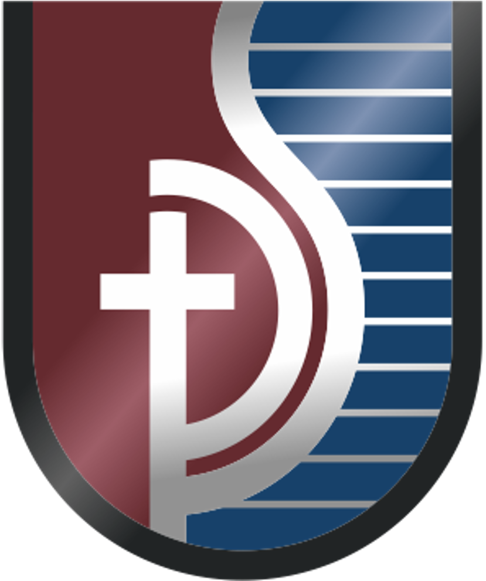
Universidad Católica San Pablo 2–13 Aug 2025 · Arequipa, Peru · certificate · poster MLSS 2025 featured lectures from renowned academics and professionals on core and advanced machine learning concepts, such as representation learning, diffusion, explainable AI and reinforcement learning. This event also provided a platform to connect with professors and PhD students from around the world, and to share my work through a poster session.Get to know me
scintilla novae humanitatis
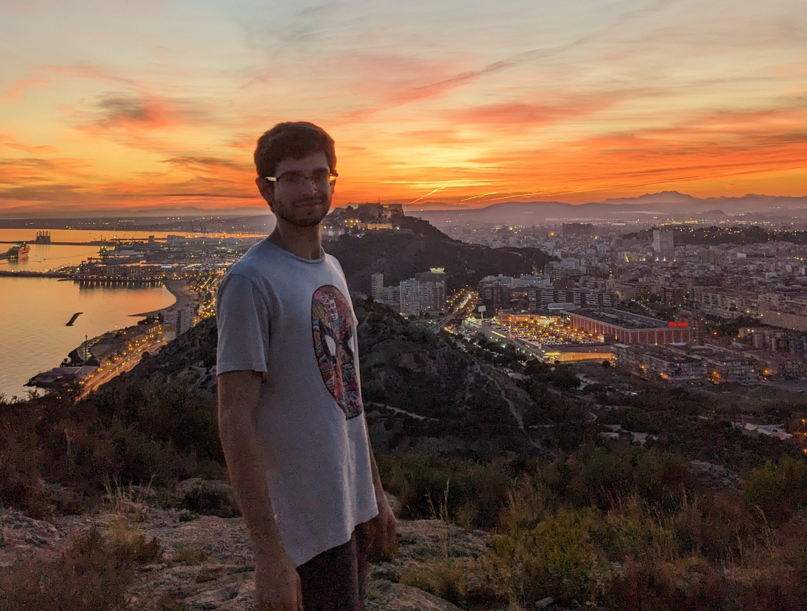

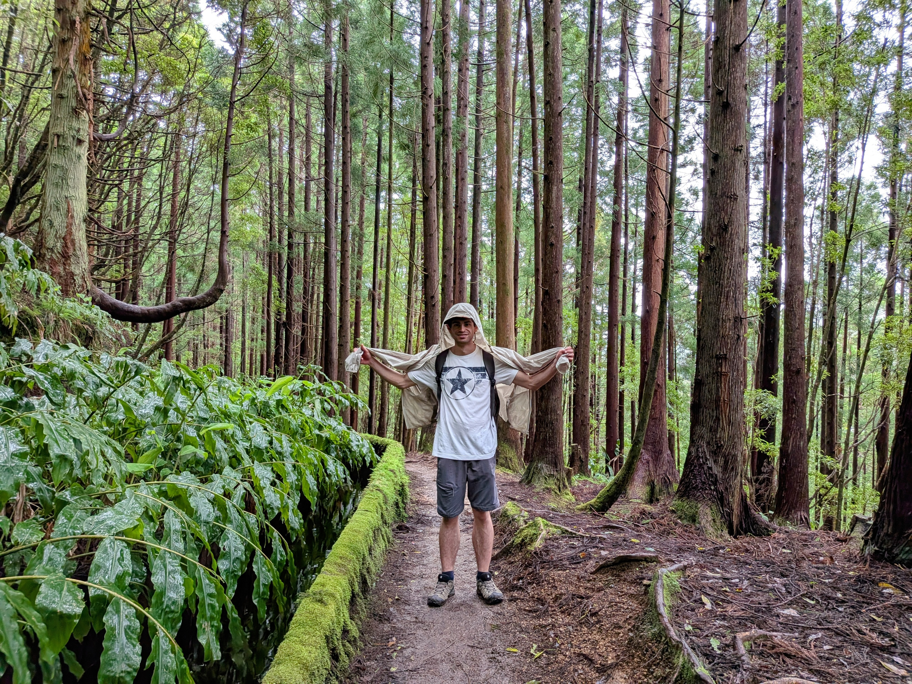
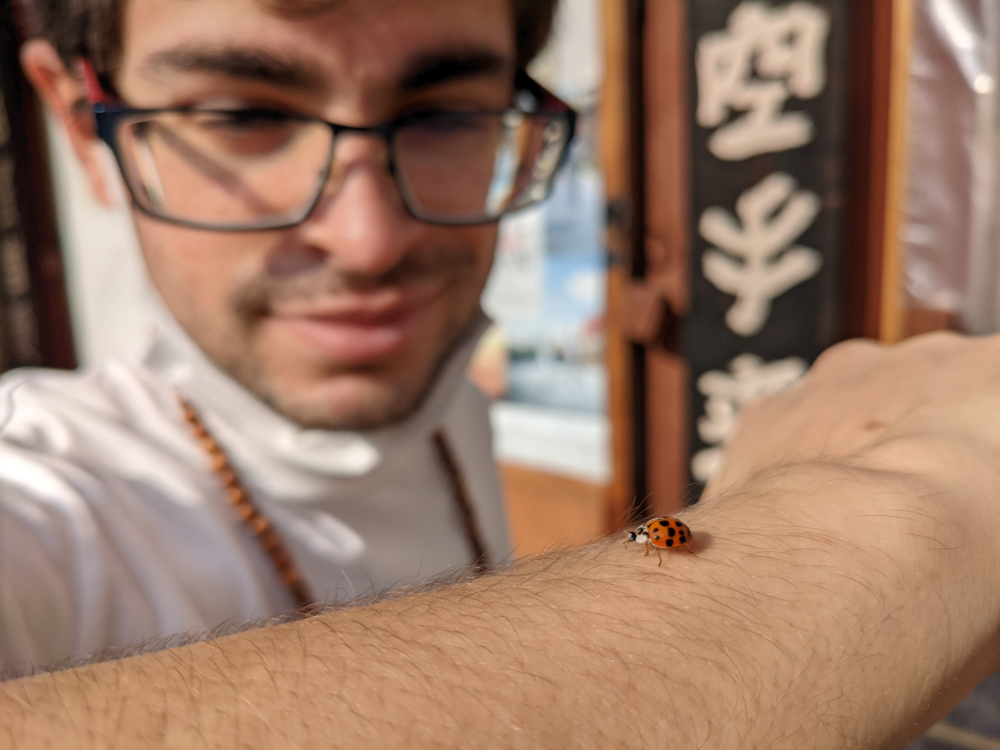
Born in Alicante (Spain), raised in Madrid. Steady and perfectionist by nature, I like organizing stuff just to calm myself. I read often, think more, and write occasionally. I'm drawn to nature, which probably fuels my desire to protect it. I enjoy long hikes and deep travel, often finding beauty in the world around me. I also played basketball for many years and currently (try to) practice taekwondo.
The Latin words scintilla novae humanitatis, spark of a new humanity
(Pope Leo XIV), work for me as a guiding principle in my life:
an exhortation to observe the world, reach the truth within it, and transform it into a better place.
Projects
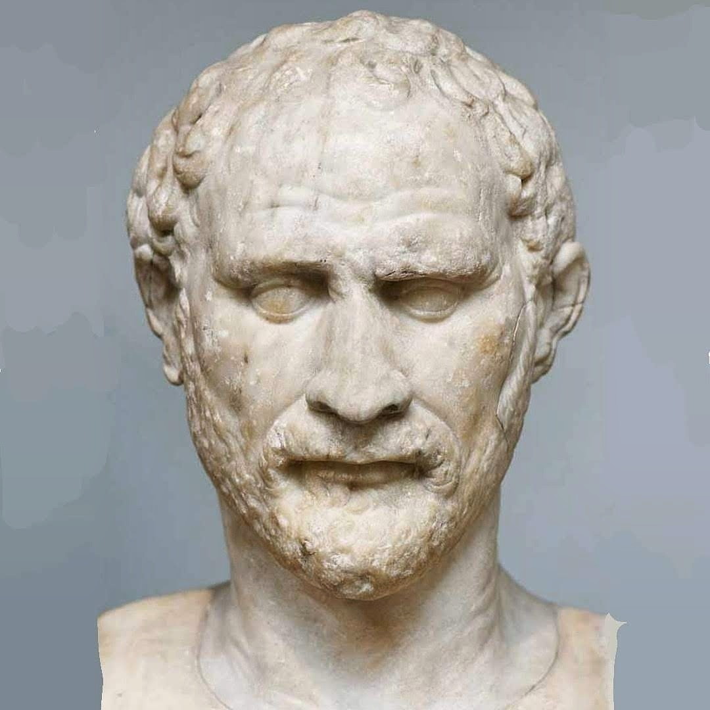
Baúl de Demóstenes
Repository with personal texts of a philosophical, social, ethical or opinion nature. Texts are in Spanish.
Yo, Gaia
A tribute to our planet Earth, its history, and its legacy, told intimately by Earth itself. Text is in Spanish.
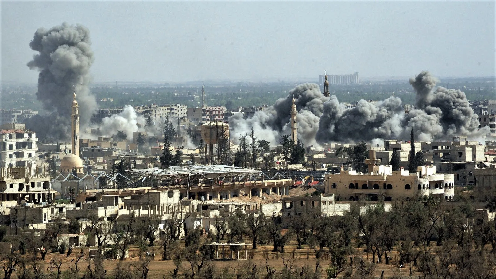
La historia de Bassel Ahmadi
A fictional yet terrifyingly accurate testimony of the Syrian civil war, from the eyes of a boy. Text is in Spanish.
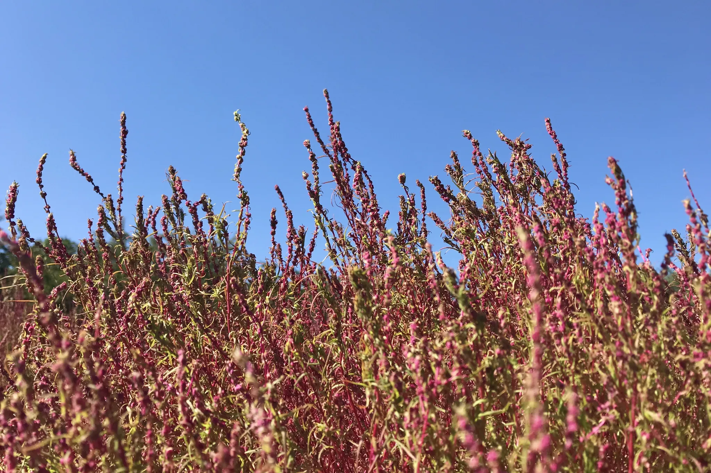
Earth Gallery
🌍 Earth Gallery is a collection of photographs that show the beauty of our Earth and everything on it.
Volunteering, other
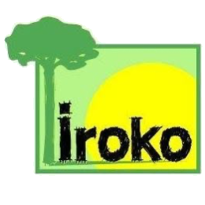
Iroko DFS Mar – Jun 2023 · Madrid, Spain · news I collaborated with the NGO Iroko DFS on the European project Climate Connect, which aimed to raise awareness about climate change through campaigns led by young students. My work involved searching volunteering schools to participate in the project, creating content, and participating in the preliminary organization of the project.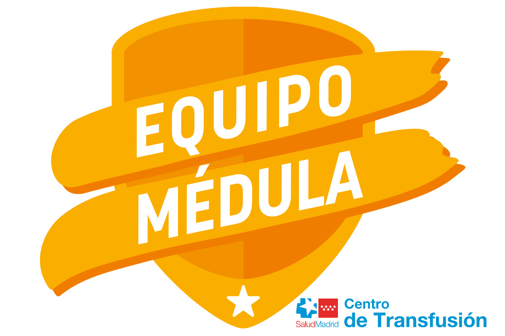
Equipo Médula Feb 2023 · Leganés, Spain I participated in two information campaigns of Equipo Médula (Bone Marrow Team) to promote bone marrow donation among University students.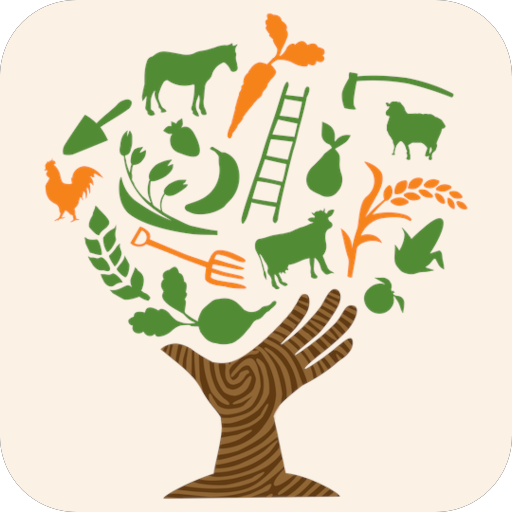
WWOOF Jul 2020 · Sober, Spain I spent one week helping with agricultural and renovation activities in a local, organic farm in Galicia, Spain.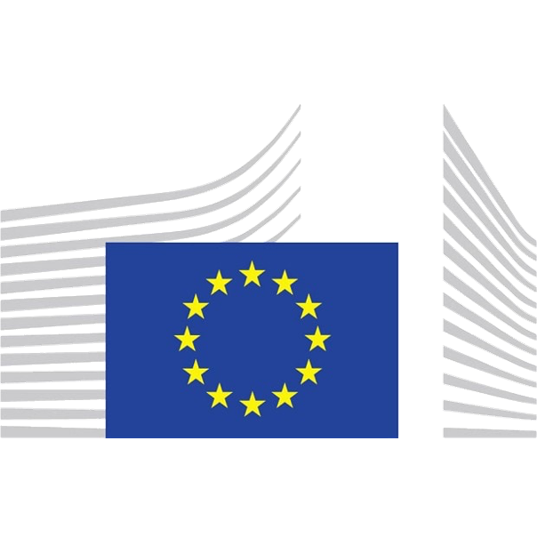
European Commission Oct 2019 · Valencia, Spain · web I was given the opportunity to participate in the public consultation of project CONCISE, funded by the European Commission's Horizon 2020 programme, with the goal of understanding how citizens access and engage with scientific information.